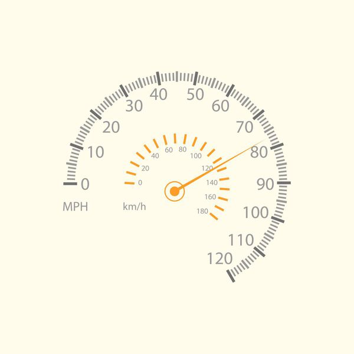
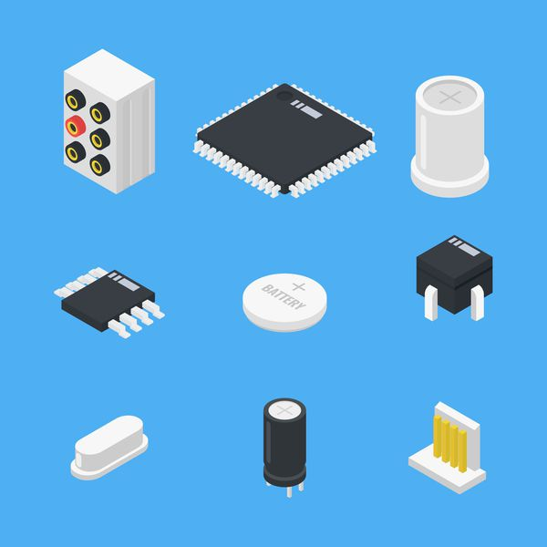
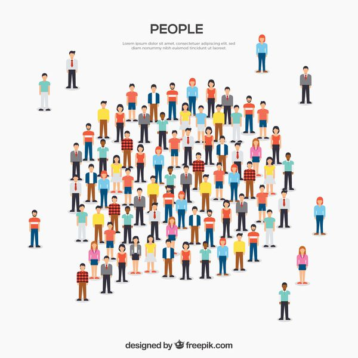

computer-architecture 2.3 Operands of the Computer Hardware Operands of the Computer Hardware 여기서는 Instruction의 피연산자로 올 수 있는 것들에 대해 알아본다. Register Operands Arithmetic Instruction은 레지스터 피연산자를 사용한다. 앞으로의 설명은 MIPS 아키텍쳐 기준으로 한다. 레지스터 : 프로세서에 존재하는 저장소 레지스터는 32
computer-architecture 2.2 Operations of the Computer Hardware Operations of the Computer Hardware MIPS Arithmetic Operation add a, b, c 위 코드는 MIPS 산술 연산을 수행하는 어셈블리 코드이다. 이 코드는두 변수 b, c를 더한 값을 a에 저장하겠다는 의미이다. add와 같은 MIPS
computer-architecture 2.1 Introduction Introduction Instruction Set 우리가 컴퓨터에게 명령을 할 때, Instruction을 사용한다. Instruction은 마치 컴퓨터 언어의 단어와 같은 역할을 한다. 이 Instruction을 정의하고 모아놓은 집합이 Instruction Set이다. 우리는 MIPS Instruction Set을 다룬다. 컴퓨터 설계의 목표
computer-architecture 1.10 Fallacies and Pitfalls Fallacies and Pitfalls Fallacies(오류) and Pitfalls(함정) 부분은 매 단원마다 있으며, 여기서는 흔히 발생하는 착각이나 실수가 무엇인지 이야기한다. Pitfall: Amdahl's Law 일부의 성능을 향상시켰을 때, 전체 성능이 같은 비율로 향상될 것이라는 생각
 computer-architecture 1.6 Performance Performance 아래 내용은 성능에 영향을 미치는 요소들과 어떤 점을 결정하는 지를 보여준다. Algorithm, Data Structure (+ Coding Skills) HLL 연산이 실행되는 횟수를 결정한다 다시 표현하자면, 프로그래머가 얼마나 효율적인 코드를 짜는지가 중요하다는 것이다. 이 때
 computer-architecture 1.4 Under the Covers Under the Covers 여기서는 컴퓨터의 기본적인 동작인 데이터 입력, 출력, 처리, 저장을 수행하는 컴퓨터의 주요 구성요소에 대해 알아봅니다. Components of a Computer 컴퓨터의 주요 구성요소에는 5가지가 있습니다. Datapath : 데이터에 대한 연산 수행 Control
computer-architecture 1.3 Below Your Program Below Your Program 우리가 흔히 접하는 프로그램은 다양한 라이브러리를 사용하여 만들어졌고 사용된 라이브러리의 코드를 제외하더라도 짧게는 수십 줄에서 많게는 수백 만 줄의 코드로 이루어져 있습니다. 그리고 그 코드들은 대부분 printf("Hello, World!
 probability-and-statistics 1.1 Sets Sets Sets and Elements 정의 집합(Set)은 어떠한 대상(Object)들의 모임이다 집합에 속하는 대상 : 원소(Element) Example $ S_{1} = \{apple, orange, kiwi\} $ 집합 S는 apple, orange, kiwi 세 요소를 가지고 있다